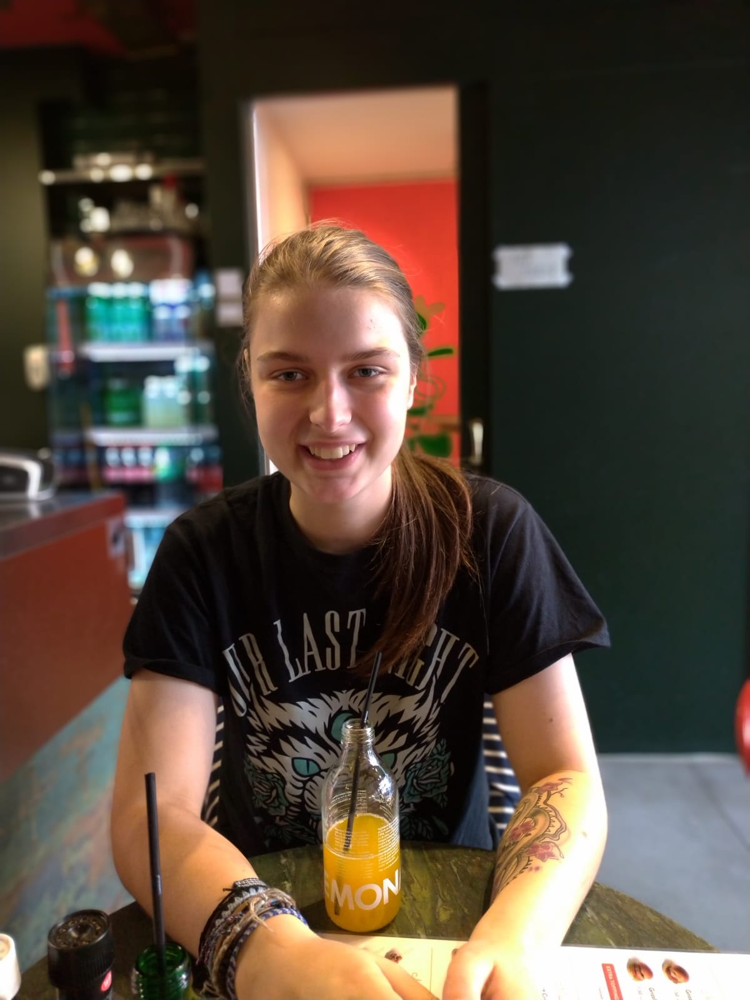
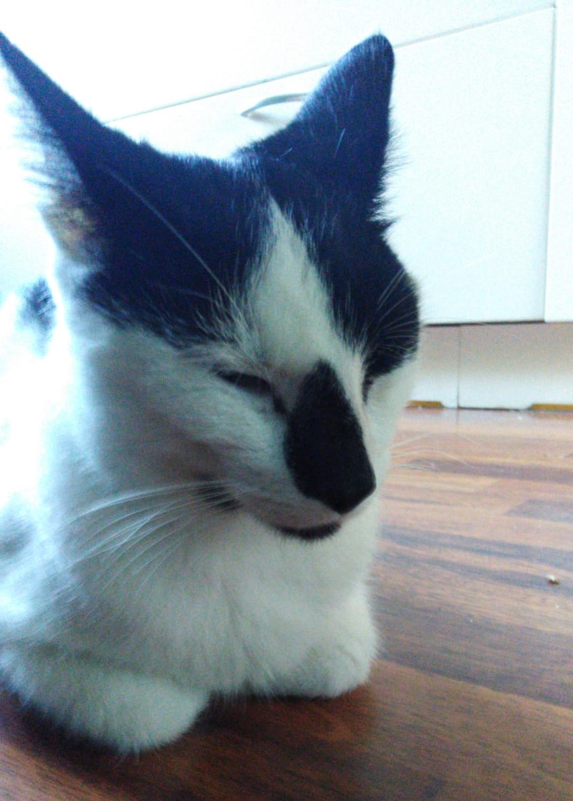
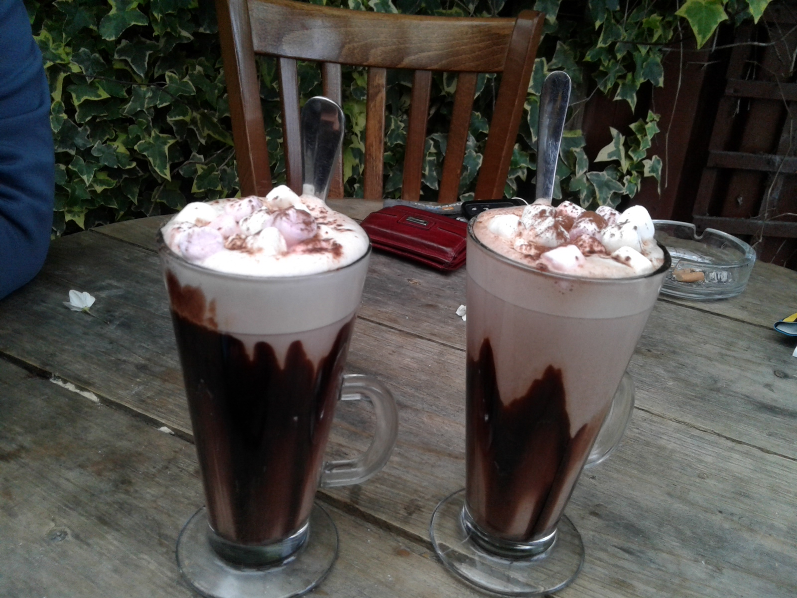

Hallo!

Hallo, dit ben ik!
Mijn naam is Kim van Straaten en ik doe de opleiding applicatie ontwikkeling bij het MBO college Amstelland.
Wij hebben vanuit school de opdracht gekregen om deze website te maken voor toekomstige stage bedrijven en opdrachtgevers.
Op deze website vindt u verschillende informatie over mij, zoals wat ik leuk vind en waar ik goed in ben.
Een overzicht van mijn vaardigheden en een voorgaande projecten.
Er is ook een link naar mijn github account en andere contact gegevens.

